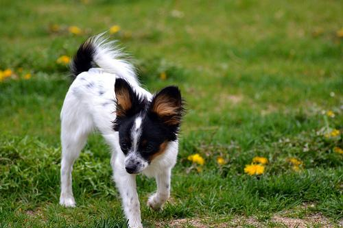
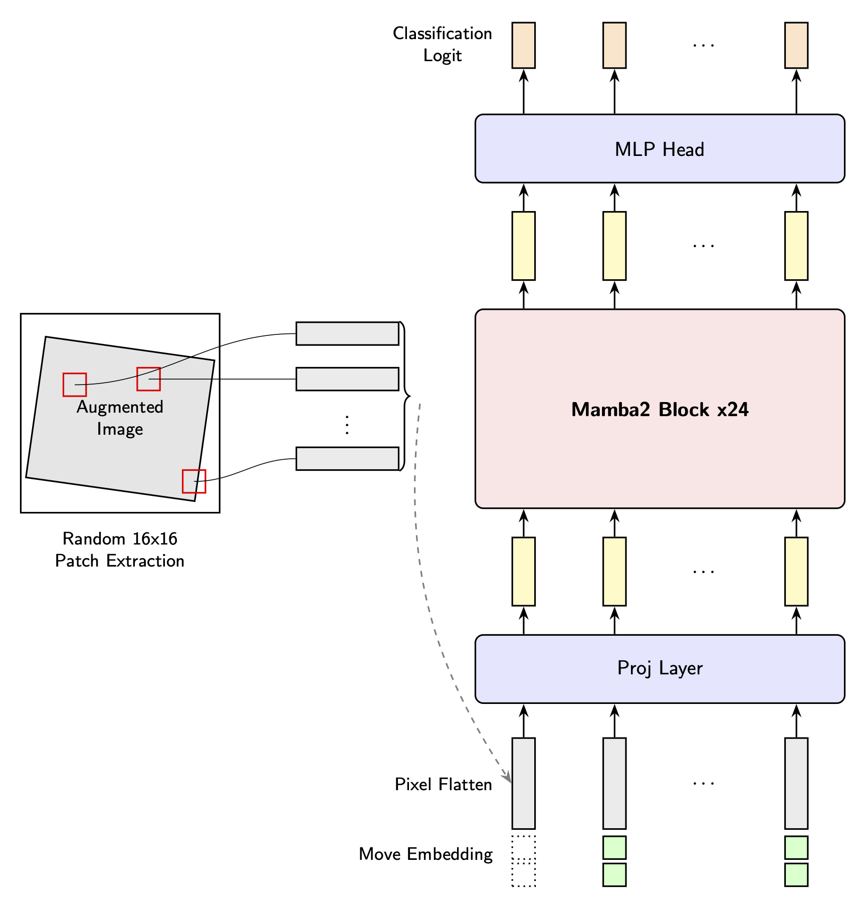
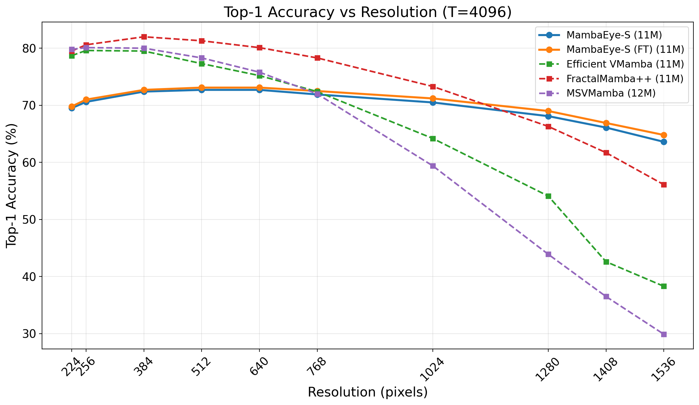
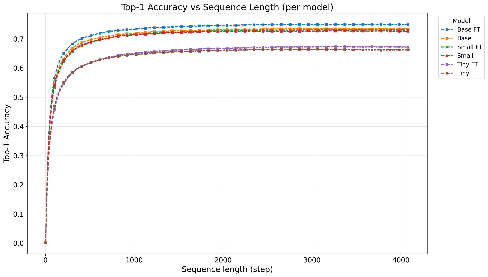

Inference with Various Image Resolutions
Input Image (500 × 333)

Inference Process
Input Image (1024 × 1024)
Inference Process
Input Image (1536 × 2752)

Inference Process
Inference by Scanning Paths
Column Raster
Column Snake
Diagonal
Golden
Hilbert
Random Grid
Row Raster
Row Snake
Spiral
Random
Abstract
Despite decades of progress, a truly input-size agnostic visual encoder—a fundamental characteristic of human vision—has remained elusive. We address this limitation by proposing MambaEye, a novel, causal sequential encoder that leverages the low complexity and causal-process based pure Mamba2 backbone. Unlike previous Mamba-based vision encoders that often employ bidirectional processing, our strictly unidirectional approach preserves the inherent causality of State Space Models, enabling the model to generate a prediction at any point in its input sequence. A core innovation is our use of relative move embedding, which encodes the spatial shift between consecutive patches, providing a strong inductive bias for translation invariance and making the model inherently adaptable to arbitrary image resolutions and scanning patterns. To achieve this, we introduce a novel diffusion-inspired loss function that provides dense, step-wise supervision, training the model to build confidence as it gathers more visual evidence. We demonstrate that MambaEye exhibits robust performance across a wide range of image resolutions, especially at higher resolutions such as 15362 on the ImageNet-1K classification task. This feat is achieved while maintaining linear time and memory complexity relative to the number of patches.
Model Architecture
MambaEye processes a sequence of image patches through three components: a Projection Head that concatenates each patch with a sinusoidal Move Embedding encoding the relative spatial shift from the previous patch, a causal Mamba2 Backbone of stacked SSM blocks, and a Classification Head that produces logits at each step.
Key features of the architecture include:
- Flexible Image Understanding: Processes multi-resolution images and arbitrary aspect ratios, including partial images.
- Variable-Length Processing: Natively handles sequential inputs of varying lengths.
- Efficient Scaling: Achieves linear memory and computational complexity (by number of patches) powered by Mamba2 layers. (Constant memory for inference.)

Diffusion-Inspired Loss Function
We frame classification as iterative refinement: as the model sees more patches, its prediction should evolve from a uniform prior to the ground-truth label. The target distribution at step \( t \) is interpolated using the information ratio \( r_t \in [0, 1] \) — the fraction of image area covered so far:
\( \mathbf{p}_{\text{scheduled}}^{(t)} = (1 - r_t) \cdot \mathbf{p}_{\text{prior}} + r_t \cdot \mathbf{p}_{\text{target}} \)
The total loss is the mean cross-entropy over the full sequence:
\( \mathcal{L} = \frac{1}{T} \sum_{t=0}^{T-1} \text{CE}\left(\mathbf{p}_{\text{scheduled}}^{(t)}, \mathbf{y}_t\right) \)
This dense, step-wise supervision guides the model to calibrate confidence progressively and encourages its hidden state to act as a compressed summary of all visual evidence gathered.
| Table 4. Ablation study of the loss function on ImageNet-1K | ||||
|---|---|---|---|---|
| Loss Function | 224² | 512² | 1024² | 1536² |
| Standard CE | 56.7 | 61.9 | 59.9 | 53.6 |
| Ours (Diffusion-inspired) | 61.1 | 66.2 | 63.3 | 56.5 |
Ablations & Results
A key claim of MambaEye is its size-agnostic architecture. We evaluated pretrained models across a wide range of image resolutions (224² to 1536²). As demonstrated below, our architecture scales robustly with resolution even when using a naive random sampling policy. In high-resolution regimes (1280² to 1536²), our fine-tuned variants surpass or close the gap with size-matched baselines that rely on deterministic scanning patterns. MambaEye's unidirectional model is inherently adaptable to arbitrary scanning patterns, outperforming traditional raster or zigzag scans.


| Table 3. Top-1 Accuracy (%) on ImageNet-1K at various resolutions (T = 4096). "FT" denotes models fine-tuned on T=2048 sequences. | ||||||||||
|---|---|---|---|---|---|---|---|---|---|---|
| Model | 224² | 256² | 384² | 512² | 640² | 768² | 1024² | 1280² | 1408² | 1536² |
| MambaEye-T (5.8M) | 61.1 | 62.9 | 65.8 | 66.2 | 66.2 | 65.3 | 63.3 | 60.6 | 58.8 | 56.5 |
| MambaEye-T (FT) (5.8M) | 62.1 | 63.7 | 66.7 | 67.2 | 67.1 | 66.4 | 64.4 | 61.6 | 59.8 | 57.4 |
| MSVMamba (7M) | 77.3 | 77.7 | 77.4 | 75.0 | 71.7 | 65.8 | 48.0 | 31.0 | 23.8 | 18.3 |
| ViM (7M) | 76.1 | 76.3 | 70.4 | 67.4 | 51.4 | 30.6 | 16.1 | 7.2 | 4.1 | 1.8 |
| Efficient VMamba (6M) | 76.5 | 76.9 | 76.5 | 73.8 | 70.4 | 65.8 | 52.0 | 36.2 | 29.4 | 24.1 |
| FractalMamba++ (7M) | 77.3 | 78.4 | 79.5 | 78.4 | 76.4 | 73.7 | 66.5 | 55.2 | 48.1 | 42.5 |
| MambaEye-S (11M) | 69.5 | 70.6 | 72.4 | 72.7 | 72.7 | 71.9 | 70.5 | 68.1 | 66.1 | 63.6 |
| MambaEye-S (FT) (11M) | 69.8 | 71.0 | 72.7 | 73.1 | 73.1 | 72.5 | 71.2 | 69.0 | 66.9 | 64.8 |
| MSVMamba (12M) | 79.8 | 80.1 | 80.0 | 78.3 | 75.8 | 72.0 | 59.4 | 43.9 | 36.5 | 29.9 |
| Efficient VMamba (11M) | 78.7 | 79.6 | 79.5 | 77.3 | 75.2 | 72.4 | 64.2 | 54.1 | 42.6 | 38.3 |
| FractalMamba++ (11M) | 79.5 | 80.6 | 82.0 | 81.3 | 80.1 | 78.3 | 73.3 | 66.3 | 61.7 | 56.1 |
| MambaEye-B (21M) | 70.6 | 71.7 | 73.3 | 73.5 | 73.4 | 72.9 | 71.7 | 69.4 | 67.0 | 64.3 |
| MambaEye-B (FT) (21M) | 72.2 | 73.2 | 74.8 | 75.0 | 75.0 | 74.6 | 73.7 | 71.5 | 69.5 | 66.7 |
| VMamba (31M) | 82.5 | 82.5 | 82.5 | 81.1 | 79.3 | 76.1 | 62.3 | 50.2 | 45.1 | 40.9 |
| FractalMamba++ (30M) | 83.0 | 83.5 | 84.1 | 83.9 | 83.0 | 81.9 | 78.8 | 74.3 | 71.3 | 67.5 |
Limitations & Future Work
While MambaEye is promising, several limitations remain. Our training omits advanced augmentations (e.g., CutMix, Mixup), and scaling to larger model sizes needs further study. Exploring compatibility with more complex architectures could also yield improvements.
Key future directions include generalizing to longer sequences and higher-dimensional data (video, 3D volumes) by extending the move embedding, and replacing random patch sampling with a learned, adaptive scanning policy to bring the model's efficiency closer to human vision.
BibTeX
@inproceedings{mambaeye2026,
title={MambaEye: A Size-Agnostic Visual Encoder with Causal Sequential Processing},
author={Changho Choi and Minho Kim and Jinkyu Kim},
booktitle={Proceedings of the IEEE/CVF Conference on Computer Vision and Pattern Recognition (CVPR) Findings},
year={2026},
note={Accepted}
}